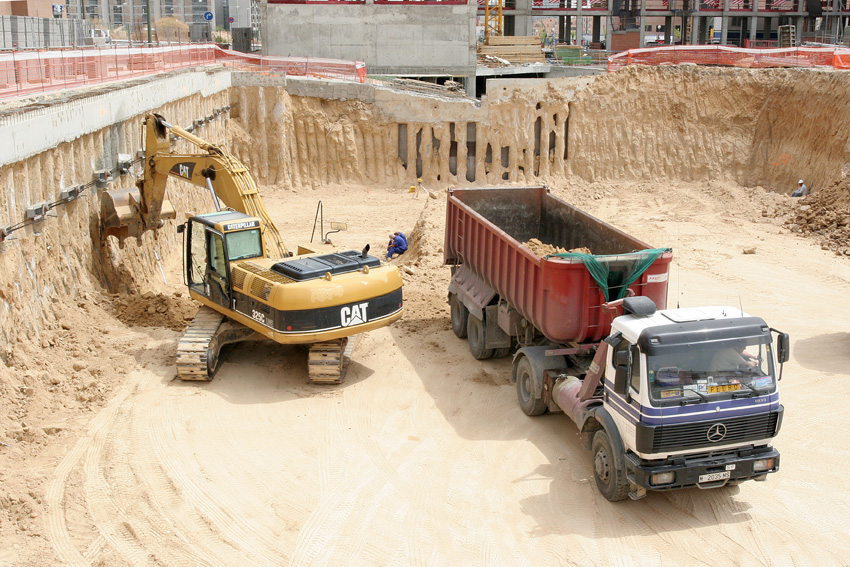
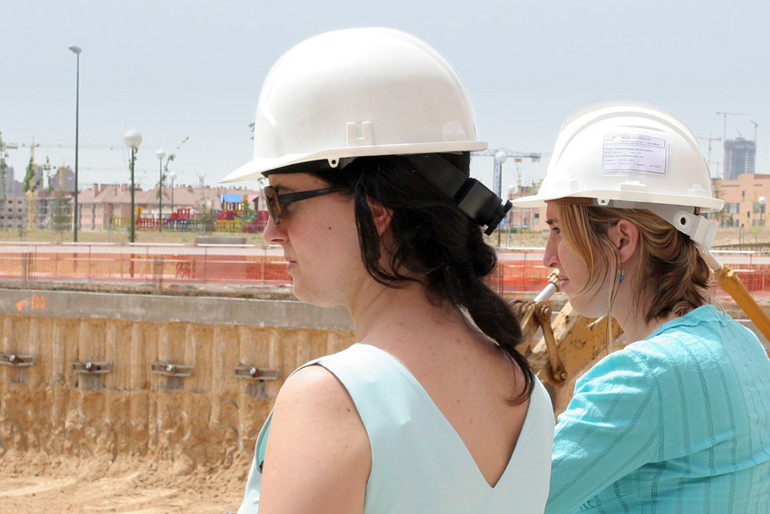
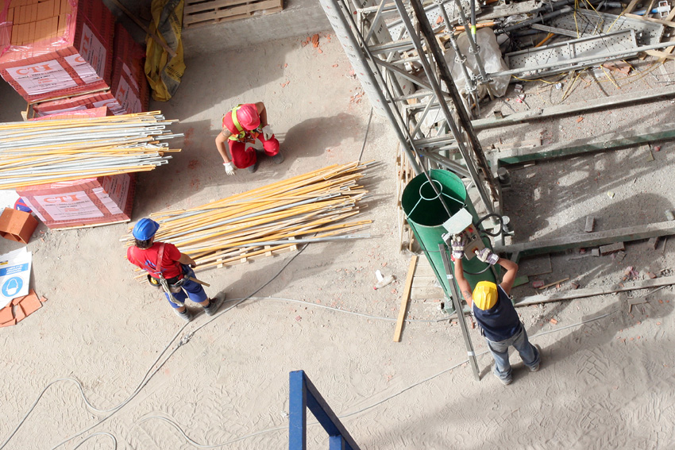

Servicios
Dirección facultativa
La dirección facultativa (ejercida por arquitect@ y arquitecto técnic@ en la mayoría de los casos y por uno de los dos agentes en proyectos más sencillos) representa y defiende los intereses de la promotora del proyecto frente a la constructora, las administraciones, etc. Sus funciones son:
- Supervisión del proyecto, verificando que la obra se ajusta a los planos, especificaciones y diseño de proyecto.
- Control de la ejecución material, supervisando los trabajos en obra y su correcta realización conforme a las buenas prácticas.
- Validación técnica: propuesta y aprobación de materiales, soluciones constructivas y modificaciones.
- Cumplimiento normativo técnico y urbanístico, garantizando el cumplimiento de toda la normativa vigente en el momento de la ejecución de la obra
- Coordinación de agentes, actuando como enlace entre promotor, constructora y resto de técnicos.

Redacción de proyectos
Un Proyecto es la forma de plasmar en un documento las necesidades del cliente para hacerlas realidad: la reforma de un cuarto de baño, la implantación de una actividad comercial, la ejecución de una vivienda…
No hay proyectos grandes ni pequeños, sino adaptados a las necesidades de cada cliente.

Gestión de licencias y declaraciones responsables
Hacer realidad un proyecto conlleva cumplir con las exigencias urbanísticas y de tramitación de una “Declaración Responsable” o una “Licencia”. Desde las consultas iniciales hasta la visita de comprobación de la administración o de la ECU, te acompañamos en todo el proceso.
Declaración Responsable
Es el procedimiento general de tramitación para la implantación, modificación y ejecución de obras en actividades y en uso residencial.
La declaración responsable es el documento en el que el interesado manifiesta bajo su responsabilidad, de forma clara y precisa que la actuación urbanística que pretende realizar cumple con los requisitos exigidos en la normativa urbanística y sectorial aplicable a dicha actuación, que dispone de la documentación acreditativa del cumplimiento de los anteriores requisitos y que la pondrá a disposición del Ayuntamiento cuando le sea requerida, comprometiéndose a mantener dicho cumplimiento durante el tiempo que dure la realización del acto objeto de la declaración.
Licencias
Las actividades y obras que se tramitan por el procedimiento de licencia son las definidas en las Ordenanza de licencias y declaraciones responsables urbanísticas de cada ayuntamiento. Generalmente, son necesarios en proyectos más complejos o que requieren un mayor control administrativo.
Asesoramiento técnico en el proceso constructivo
El asesoramiento técnico es un servicio fundamental que ofrecemos y abarca todo el proceso constructivo, desde la elección de los materiales más adecuados a sus necesidades, los sistemas de climatización más eficientes, la previsión para instalaciones futuras…
